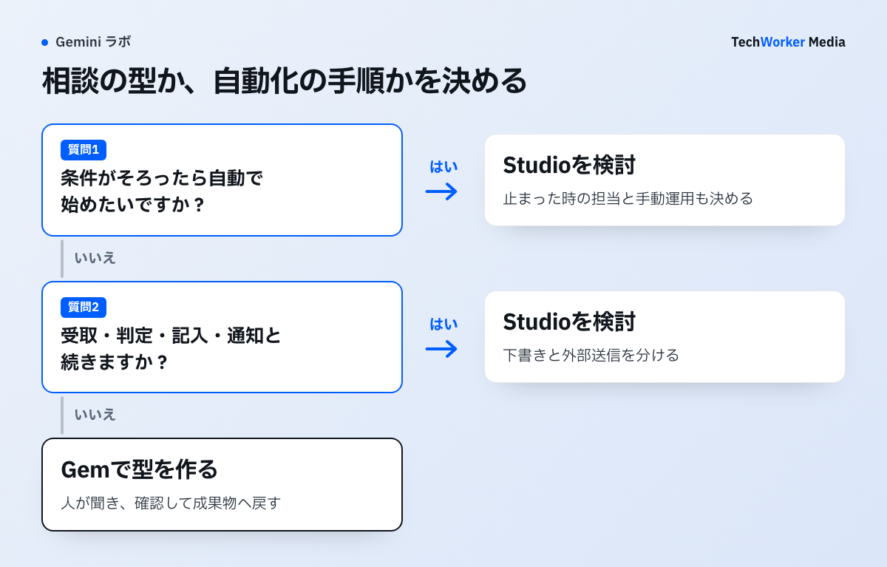

会社のWorkspaceアカウントでは、Gemは早くても2027年3月1日まで使えます。2026年11月17日にGeminiアプリの「設定」の中へ移りますが、作る・直す・使うは続けられます。置き換わるときに残ったGemはGeminiアプリの下書きのスキルになり、Gemini EnterpriseやWorkspaceのスキルには移りません。Googleの管理者ヘルプ（2026年11月9日更新）をもとに、日程と違い、管理者の準備を2026年11月16日に確かめてまとめます。
企業アカウントのGemは、いつスキルに置き換わりますか？
企業・非営利のアカウントでは、早くても2027年3月1日です。その日からGemを作る・直す・使うができなくなり、残ったGemはGeminiアプリの下書きのスキルに自動で移ります。
原文“Skills fully replace Gems, and users can no longer create, edit, or use Gems.”（日程の表の「No sooner than March 1, 2027」「Business and Enterprise」の行）
日本語訳スキルがGemを完全に置き換え、ユーザーはGemを作成・編集・使用できなくなります（早くても2027年3月1日、Business・Enterprise）。
日程は、アカウントの種類で大きく違います。会社のアカウントの予定と、個人アカウントの予定を分けて見ます。
| 日付 | 会社のWorkspaceアカウント | 18歳以上の個人アカウント |
|---|---|---|
| 2026年10月13日 | Geminiアプリでスキルの提供が始まる（11月中旬までに全員へ）。Workspace Studioで「Ask a Gem」の手順を使う新しいフローは作れなくなる | 同じ |
| 2026年11月9日 | Workspace StudioとGmail・ドキュメント・スライド・ドライブ・Chatで、スキルの提供が始まる | 対象外（Workspaceの機能） |
| 2026年11月17日 | Gemが「設定」の中へ移る。作る・直す・使うは続けられる | Gemがスキルに移り、読み取り専用になる |
| 2026年12月17日 | 変わらない | GemがGeminiアプリから消える |
| 早くても2027年3月1日 | 企業・非営利：スキルがGemを置き換える。残ったGemは下書きのスキルに移る | すでに終了 |
| 早くても2027年6月1日 | 教育機関：同じく置き換わる | すでに終了 |
個人アカウントの日程は、Geminiアプリのヘルプ「About the transition from Gems to skills」によります。会社のGemを個人アカウントに移して試すと、会社のアカウントより1年以上早く使えなくなります。自動の移行の詳しい手順は、移行が始まる30日以上前にヘルプへ載ると書かれています。
Gemとスキルは何が違いますか？
スキルは、どの会話でも「/」か「@」と名前で呼び出せる、使い回しの指示です。Gemのように専用の画面を開かずに使え、1つの依頼に複数を組み合わせられます。
| 項目 | Gem | スキル |
|---|---|---|
| 使う場所 | Geminiアプリだけ | Geminiアプリ、Google Workspace（Studio・Gmail・ドキュメントなど）、Gemini Enterprise |
| 呼び出し方 | Gemの画面を開いて話す | どの会話でも「/」か「@」と名前で呼ぶ。関係する依頼では自動で使われる |
| 組み合わせ | Gemごとに画面を分けて使う | 1つの依頼に複数のスキルを組み合わせられる |
| 形式 | Geminiアプリの中の設定 | Markdownで書くSKILL.md。ほかのツールで作ったスキルも取り込める |
| 上限 | 記載なし | 作る数は無制限、同時にオンにできるのは100個まで |
出典は管理者ヘルプと「Prepare your organization for the transition to skills」です。Geminiアプリのヘルプには、Gemで使えた動画・音楽の作成、Canvas、Deep Researchなどの多くの機能が、今はスキルでは使えないとあります。Canvasなどを組み込んだGemは、移したあとに同じ出力が出るかを確かめます。
Gemini Enterpriseでは、Gemはどうなりますか？
Gemini EnterpriseにGemは移りません。GemはGeminiアプリだけの機能で、Gemini Enterpriseで同じ指示を使うには、スキルとして作り直します。
管理者ヘルプは、スキルを3つの場所で別々に作る必要があると書いています。Geminiアプリで作ったスキルは、Google WorkspaceやGemini Enterpriseからは使えません。
| 項目 | Geminiアプリ | Google Workspace | Gemini Enterprise |
|---|---|---|---|
| 使える人 | すべてのWorkspaceエディションの利用者 | 18歳以上で、Business Starter・Standard・Plus、Enterprise Standard・Plusなどの利用者 | Gemini Enterpriseのライセンスを持つ人 |
| Gemの移行先 | ここだけに移る | 移らない | 移らない |
| 管理者の設定 | Geminiアプリの利用の設定 | Studioのスキルの設定、社外共有、ログ、DLP、ドライブの共有 | Skill Registryで審査・承認し、部署や組織部門に配る |
部署に配る手順を決めて使わせたい会社は、Gemini EnterpriseのSkill Registryが合います。GmailやドキュメントでWorkspaceのスキルを使うときの設定は、Google Workspaceのスキルとはにまとめました。Workspaceのスキルは2026年11月9日から既定でオンになっています。
自動の移行では、何が引き継がれますか？
名前、説明、指示、アップロードした知識ファイルと、ドライブの権限と共有の設定が引き継がれます。移ったスキルは下書きで、作った人が見直して有効にするまで使えません。
- 移る場所：Geminiアプリの左のメニューの「Customize」に、オフの下書きとして並びます。
- 移らないファイル：Geminiアプリのヘルプでは、スキルのファイルは合計100MBまでです。超えると大きいファイルから外されます。音声・動画、GitHubのファイル、.doc・.xls・.pptの古い形式、zipなどの圧縮ファイルは移りません。
- Workspace Studioのフロー：「Ask a Gem」の手順は、自動の移行の前に「Ask Gemini」の手順に置き換えるよう案内されています。
下書きのまま放っておくと、移行の後に誰も使えない状態になります。作った人が異動や退職でいないGemは、移行の前に持ち主を決め直します。
Gemのままか、Studioのフローにするかは、どう分けますか？
人が相談して下書きを受け取る業務はスキルに、条件に応じて複数の操作を進める業務はWorkspace Studioのフローにします。

GoogleのWorkspace Studioの公式説明では、フローは開始の条件と処理の手順から成ります。スキルはフローにつなげて使えます。指示を保存することと、メールやファイルを実際に操作することは、別々に設計します。
問い合わせ対応なら、まず返信文の下書きを人が確認する業務から始めます。通知や記録まで自動にするときは、誰が送り先を確かめ、どの時点で社外へ送るのかを決めます。Studioの試験でも送信や更新が実行されるため、試験用の宛先と資料を用意します。
移行の前に、社内のGemをどう棚卸ししますか？
よく使うGemを1つ選び、目的、持ち主、指示、参照資料、共有範囲、最終確認日を記録します。
| 記録する項目 | 議事録を作るGemの記入例 |
|---|---|
| 目的・対象業務 | 定例会議から決定事項と宿題を抜き出す |
| 持ち主・更新担当 | 会議運営の担当者。異動時の引継ぎ先も記録する |
| 指示・参照資料 | 出力の見本、用語集、推測で補わない項目 |
| 共有範囲・入力条件 | 利用部門と、入力前に伏せる情報 |
| 試験用の入力・期待する出力 | 担当者や期限がない場合は「未定」と書く |
| 移行先 | Geminiアプリのスキル、Workspaceのスキル、Gemini Enterpriseのどれで使うか |
この表はTechWorkerの運用の提案で、Googleが求める項目ではありません。たとえば議事録のGemなら、匿名にした会議記録と「決定事項・担当者・期限」の出力例を一組にします。担当者が書かれていない入力も試し、AIが名前を補っていないかを確かめます。
2027年3月までに、管理者は何をすればよいですか？
日程を社内に知らせ、使っていないGemを消し、大事なGemをスキルに作り直し、Studioの「Ask a Gem」を置き換えます。
- 日程を知らせる：11月17日にGemが「設定」へ移ることと、移ったGemは下書きのスキルになることを伝えます。
- 使っていないGemを消す：試しに作ったものや一度きりのものは、自動の移行の前に消してもらいます。
- 大事なGemを作り直す：上の棚卸し表で選んだGemを、使う場所（Geminiアプリ、Workspace、Gemini Enterprise）を決めて作り直します。
- Studioのフローを直す：「Ask a Gem」の手順を「Ask Gemini」に置き換えます。
- 移したあとに試す：棚卸し表の試験用の入力で、同じ出力と共有範囲になるかを確かめます。
1から4は管理者ヘルプが勧める準備で、5はTechWorkerが足した確認です。
よくある質問
企業・非営利のWorkspaceアカウントでは、早くても2027年3月1日までは使えます。教育機関のアカウントは、早くても2027年6月1日までです。2026年11月17日以降は、Geminiアプリの「設定」の中から作る・直す・使うを続けます。
18歳以上の個人アカウントでは、2026年11月17日にGemが読み取り専用になり、12月17日にGeminiアプリから消えます。会社のアカウントより1年以上早く終わるので、会社のGemを個人アカウントに移して試す使い方はしません。
移りません。自動の移行で、残ったGemはGeminiアプリの下書きのスキルになり、Google WorkspaceやGemini Enterpriseには移りません。Gemini Enterpriseで使う場合は、スキルとして作り直し、管理者がSkill Registryで承認して配ります。
対応する形式のファイルは引き継がれます。Geminiアプリのヘルプでは、スキルのファイルは合計100MBまでで、音声・動画、.doc・.xls・.pptの古い形式、zipなどの圧縮ファイルは移りません。超えた分は大きいファイルから外されます。
作る数に上限はありませんが、同時にオンにできるのは100個までです。Googleは、オンのスキルを100個未満に保つと、Geminiが会話に合うスキルを選ぶときの取り違えを防げると説明しています。
次の一歩は何から始めればよいですか？
社内で一番使われているGemを1つ選び、棚卸し表を持ち主と一緒に埋めます。
会社のアカウントの設定はGeminiの法人導入、人の確認を残す工程はAIに任せる業務の決め方で扱っています。Gemini・ChatGPT・Copilot・Claudeの法人契約の料金を比べたい方は、下の枠から比較表を受け取れます。
出典と確認範囲
確認日：2026年11月16日。日程と提供の条件はGoogleの公式ヘルプ、棚卸し表と試験の手順はTechWorkerの提案です。日程はGoogleが「早くても（no sooner than）」と書いている予定で、変わることがあります。自社のアカウントでの提供と移行の結果は、管理者が実際の環境で確かめてください。